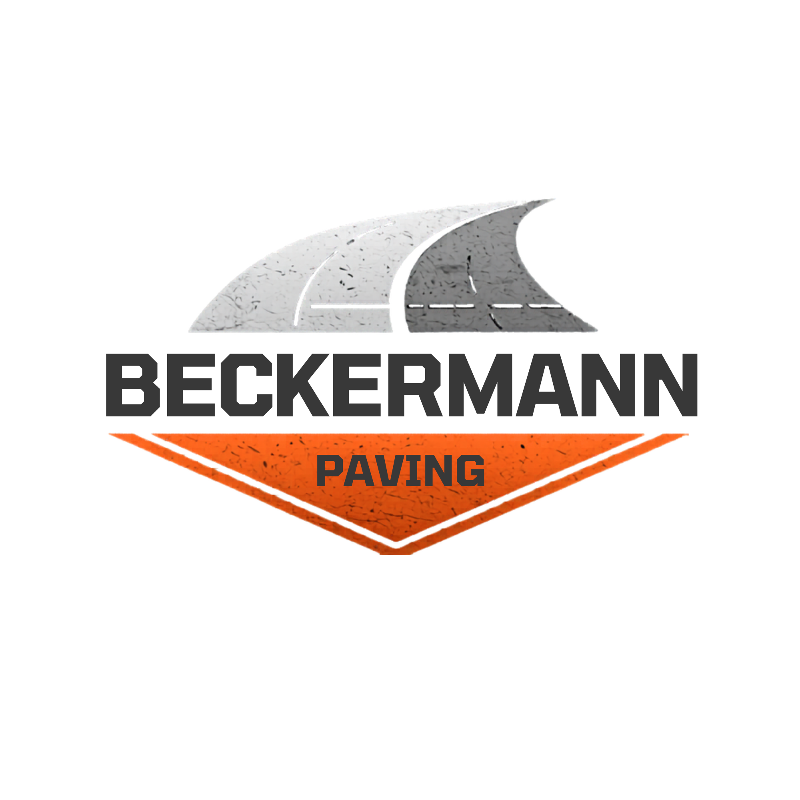

Proudly Serving Jefferson County and Surrounding Areas
Call for Free EstimateBeckermann Paving provides reliable, high-quality asphalt paving services for residential, commercial, and HOA clients. We focus on durability, clean work, and honest pricing.
New installs and replacements built to last.
Professional paving for businesses and HOAs.
Fix cracks, potholes, and worn surfaces.
Protect and extend the life of your asphalt.
Phone: 314-349-5052
Email: beckermannpaving@gmail.com
Service Area: Jefferson County, Washington County, Franklin County, and surrounding areas